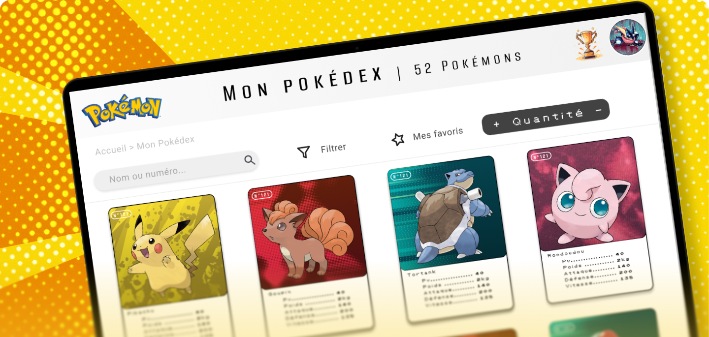
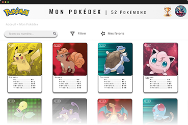
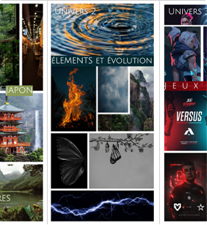
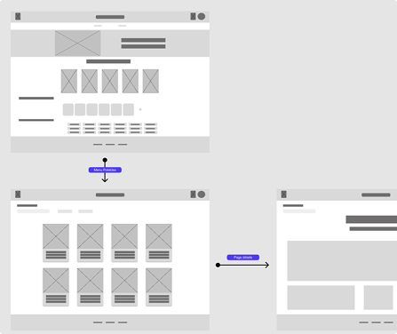
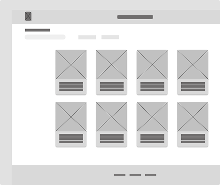
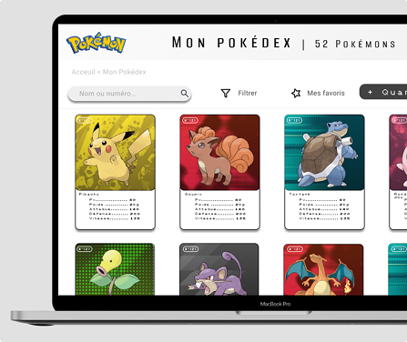
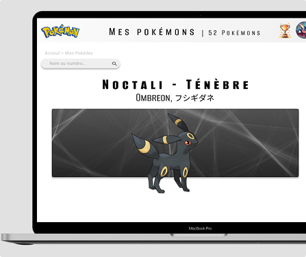

CONTEXTE
Pokémon est mon premier projet d’UX/UI design. C’est un projet qui consiste à réaliser un site web de gestion de collection de Pokémon en utilisant du HTML, CSS et JS. Tout a été développé from scratch, du code à l’UX. Le site web doit permettre à l’utilisateur d’ajouter/supprimer des Pokémon de sa collection et d’afficher ses caractéristiques.
OUTILS UTILISÉS
Figma
Visuels, wireframes, mockups
VS Code
HTML, CSS, JS

étapes
Planification et Exploration : Planche univers

La première étape a consisté à explorer différents univers visuels pour donner une
identité au site.
J'ai élaboré une planche univers : un côté orienté Nature et
Éléments mettant en
avant l'aspect sauvage des créatures, une thématique Japon ancrée
dans les origines
de la licence, et un thème Esport pour l'emergence des jeux de
compétition.
C'est finalement l'univers Esport qui a été retenu pour son aspect
dynamique et
moderne.
Ce choix se traduit en une interface aux contrastes marqués avec
des visuels
colorés, pétants et texturés.
Idéation : Architecture du site


Une fois le thème choisi, j’ai conçu 3 wireframes pour les 3 pages demandées : page d’accueil, page de collection et page détails. Il fallait également pensé aux fonctionnalités d’ajout/suppression de Pokémon dans la collection.
Génération : Conception de l'interface


Enfin, j’ai transformé mes maquettes en un site fonctionnel développé from scratch. J’ai utilisé du HTML, CSS et JS pour faire le site, puis je l’ai hébergé sur le réseau de l’IUT de Lannion.
CE QUE JE RETIENS
Le Pokémon m’a appris a créer une interface en commençant par une étape de
réflexion graphique,
puis en pensant à l’architecture, avant de coder.
J'ai réalisé que pour que l'expérience utilisateur soit réussie, il fallait que tout soit
pensé en
amont, notamment pour des actions comme l'ajout ou la suppression de Pokémon.
Le plus difficile pour moi a été la partie en JavaScript. Gérer
dynamiquement la collection et comprendre tous les paramètres à prendre en compte pour que le site
soit interactif a été un vrai challenge.